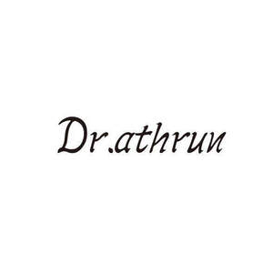

Trade Mark Journal No.2026/003 16 January 2026
UK00004315396 24 December 2025 (3,5,10)

- Class 3
- Soap; Cosmetic preparations for baths; Cream for whitening the skin; Non-medicated mouthwashes; Cosmetics; Pastes for razor strops; Detergents, other than for use in manufacturing operations and for medical purposes; Potassium hypochloride; Depilatories; Essential oils; Fumigation preparations [perfumes]; Ethereal oils for cosmetic purposes; Ionone [perfumery]; Lotions for cosmetic purposes; Perfumes; Cosmetic preparations for skin care; Bath preparations, not for medical purposes; Cleansers for intimate personal hygiene purposes, non medicated; Toothpaste.
- Class 5
- Albuminous preparations for medical purposes; Biocides; Medicated candies; Cotton for medical purposes; Fungicides; Germicides; Mercurial ointments; Sanitary napkins; Pharmaceutical preparations for skin care; Dietetic foods adapted for medical purposes; Biological preparations for medical purposes; Medicines for human purposes; Mouthwashes for medical purposes; Nutritional supplements; Antibiotics; Collagen for medical purposes; Pharmaceuticals; Medicated dentifrices; Antibacterial handwashes; Medicated shampoos.
- Class 10
- Esthetic massage apparatus; Dental apparatus and instruments; Blood testing apparatus; Galvanic therapeutic appliances; Injectors for medical purposes; Urological apparatus and instruments; Ultraviolet ray lamps for medical purposes; Lasers for medical purposes; Medical apparatus and instruments; Cases fitted for medical instruments; Arterial blood pressure measuring apparatus; Urethral syringes; Testing apparatus for medical purposes; Contraceptives, non-chemical; Diagnostic apparatus for medical purposes; Sex toys; Apparatus for the regeneration of stem cells for medical purposes; Therapeutic facial masks.
Jiangxi Qingshan Technology Co., Ltd.
Representative: Ruoqing Dong